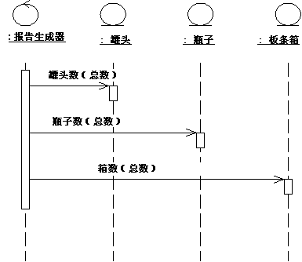
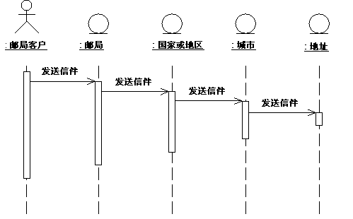
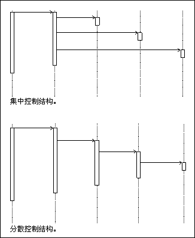

| 指南：时序图 |
 |
|
简介多数情况下，我们使用时序图来阐明用例实现（请参阅工作产品：用例实现），即说明对象如何通过交互来执行全部或部分用例的行为。一个或多个时序图可以阐释制定用例的对象交互。典型的组织是：一个时序图用于主要的事件流，一个时序图用于用例的每个独立子流程。 时序图对于设计人员而言尤其重要，因为时序图阐明了对象在流程中的角色，并为确定类职责和接口提供了基础输入信息。 与通信图不同，时序图包括了按时间排定的序列，而不包括对象关系。时序图和通信图表述相似的信息，但显示的方式不同。时序图显示了消息的明确序列，当需要对消息的时间排序进行可视化时，时序图更为适用。如果您对交互中的实例之间的结构关系感兴趣，则使用通信图。关于更多信息，请参阅技术：通信图。 时序图的内容时序图中可含对象和参与者实例，以及描述它们如何交互的消息。该图根据激活情况，描述了所包含的对象中发生的情况，以及对象如何通过相互发送消息进行通信。可为用例的事件流的每一变体制作一个时序图。
时序图描述了一个简单的“电话交换机”中的用例拨打本地电话的部分事件流。 对象对象显示为叫做“生命线”的垂直虚线。生命线代表该对象在特定时间的存在。在生命线的顶端绘有对象符号，并显示对象及其类的名称，两个名称均标有下划线且由冒号分隔： 对象名：类名 可按以下方式使用时序图中的对象：
参与者正常情况下，时序图中的第一条（最左边的）生命线代表了参与者实例，参与者实例将作为交互的调用者。如果同一图中有几个参与者实例，则尝试让它们均处于最左端或最右端的生命线。 消息消息是对象之间的通信信息，对象传达信息的同时还期望活动随之发生；在时序图中，消息显示为一个水平的实心箭头，从一个对象的生命线指向另一个对象的生命线。在消息从某个对象传向该对象自身的情况下，箭头可以始于和终于同一生命线。该箭头是用消息的名称及其参数来标注的。为了显示消息在整个交互中的顺序，还可以用序号来标记消息箭头。在时序图中，箭头的实际位置显示了相对序列，所以通常将省略序列号。 可以不指定消息，这意味着消息名称是描述消息整体意思的临时字符串，而不是接收方对象的操作的名称。可以稍后通过指定消息的目标对象的操作来分配消息。然后指定的操作将替换该消息的名称。 脚本脚本以文本形式描述时序图中的事件流。 应该将脚本放在生命线的左侧，这样就可以自上至下地查看整个流程（请参阅上图）。您可以将脚本连接到某个消息，这将确保脚本随消息一同移动。 在时序图中分布控制流全部或部分事件流程的集中控制指的是：少数对象通过向其他对象发送消息或从其他对象接收消息来操纵流程。这些控制对象决定了用例中其他对象的激活顺序。剩余对象之间的交互作用非常小，或者完全不存在。 示例 在回收机器系统中，用例打印日常报告将跟踪（除其他操作之外）已回收对象的数量和类型，并在收据上记录这些信息。报告生成器控制对象则确定抽取和书写合计数据的顺序。  用例打印日常报告的行为结构集中于控制对象报告生成器。 这是集中行为的示例。控制结构得以集中化的主要原因是，事件流的不同子事件阶段是相互独立的。该方法的主要优点是：每个对象均无需明了下一个对象的计数。要更改子事件阶段的顺序，只需更改控制对象。如果（举例）流程中包含一个新类型的退还项，您也可简单地添加另一个子事件阶段。该结构的另一优点是：由于众多对象中未设立行为顺序，所以您可以很容易地重用其他用例中的各种子事件阶段。 当参与对象相互之间直接通信、而不是通过一个或多个控制对象进行通信时，就形成了分散控制。 示例 在用例发送信件中，某人通过邮局向另一个国家或地区寄信。信件首先送到收件人所在的国家或地区。在这个国家或地区，信件送往某个具体的城市。该城市转而将该信件送往收件人的住处。  用例发送信件的行为结构是分散的。 用例行为是分散的事件流。子事件阶段是彼此从属的。信件的发件人要求“把信发送给某人。”他既不需要知道也不想知道信件在各个国家或地区或城市中转寄的细节。（如果是在国家或地区内寄送邮件，这些行为可能就不会都发生。） 使用的控制类型取决于应用程序。一般来说，您应尝试实现独立的对象，即，将多种任务委托给在性质上最适合执行这些任务的对象。 使用集中控制的事件流将具有“叉形”时序图。另一方面，“梯形”时序图则表明控制结构对于参与交互的对象来说是分散的。  事件流中的集中控制结构产生了“叉形”时序图。分散的控制结构则产生了“梯形”时序图。 用例实现的行为结构在大多情况下由集中行为和分散行为混合而成。 分散结构适用的情况：
集中结构适用的情况：
|

© Copyright IBM Corp. 1987, 2006. All Rights Reserved. |